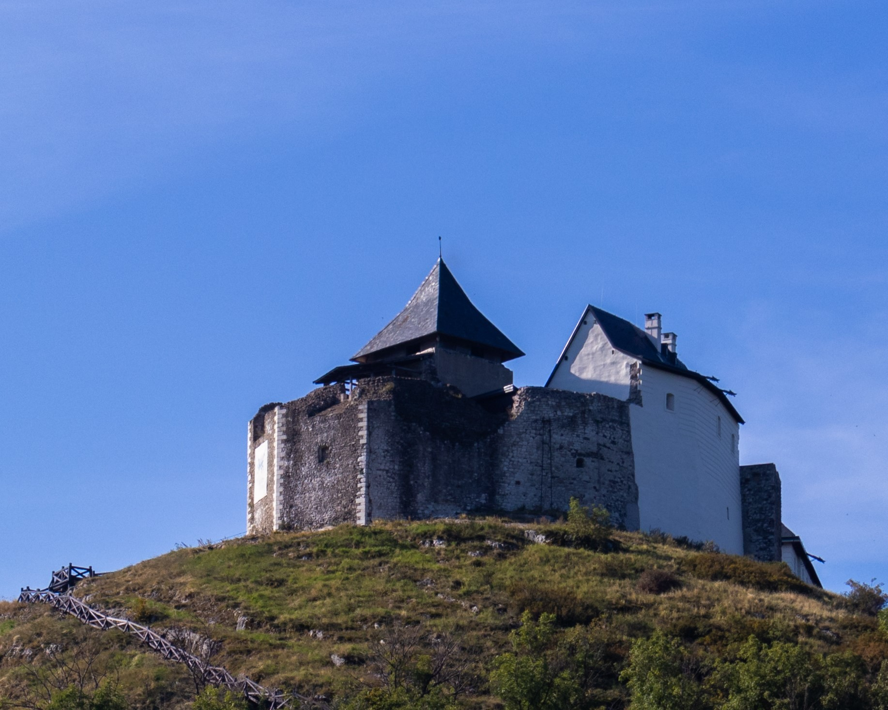
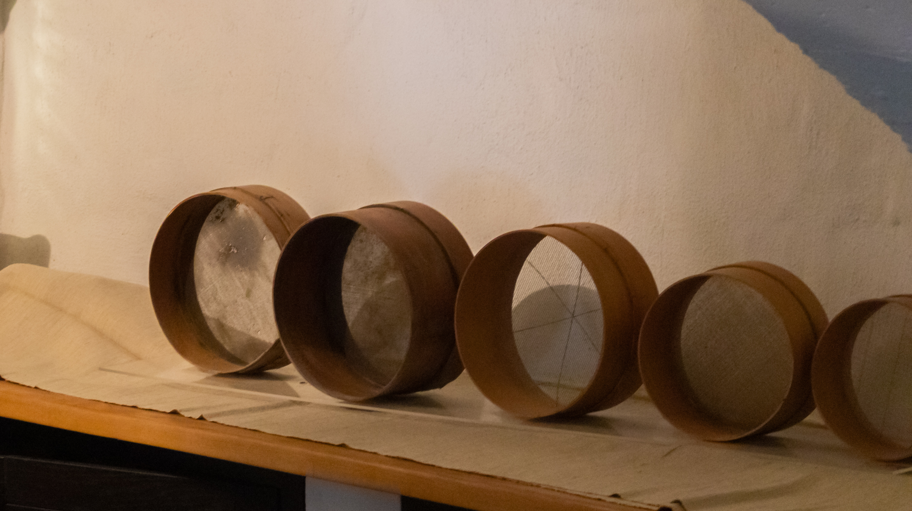

Füzér
A füzéri vár az ország olyan magánföldesúri várainak egyike, amelyek már a tatárdúlás előtt álltak. A vár nevével első ízben egy 1264-ben kelt oklevélben találkozhatunk, egy későbbi, 1270-es oklevél szerint pedig a vár birtokosa a XIII. század első felében egy bizonyos Kompolt nembeli „vak Andronicus mester” volt, akitől II. András király vásárolta meg. Egy másik okirat szerint IV. Béla lányának, Anna hercegnőnek adta Füzért, a hozzá tartozó uradalommal együtt, akitől aztán fivére erőszakkal elvette.
 676-ban a császári csapatok – ahogy azt az egész országban tették – lerombolták és felégették a korábban helyőrségként szolgáló várat. A Rákóczi-szabadságharc után maga a falu is teljesen kihalt. 1934 és 1936 között kisebb állagmegóvási munkákat végeztek a várromokon, az uradalmat 1686-tól birtokló Károlyi-család költségén. Végül csak 1977-ben kezdték meg a vár régészeti feltárását – a munkálatok jelenleg is zajlanak. A vár helyreállítása az 1990-es években kezdődött, és napjainkban is több fázisban folyik.
676-ban a császári csapatok – ahogy azt az egész országban tették – lerombolták és felégették a korábban helyőrségként szolgáló várat. A Rákóczi-szabadságharc után maga a falu is teljesen kihalt. 1934 és 1936 között kisebb állagmegóvási munkákat végeztek a várromokon, az uradalmat 1686-tól birtokló Károlyi-család költségén. Végül csak 1977-ben kezdték meg a vár régészeti feltárását – a munkálatok jelenleg is zajlanak. A vár helyreállítása az 1990-es években kezdődött, és napjainkban is több fázisban folyik.
Pár éve felépült az alsóvár, megújult a felsővár várkápolnája, palotaszárnya és alsó bástyája is. A rekonstrukciót építészek tervezték korabeli leírások, hiteles ábrázolások és saját elképzeléseik alapján. Azaz nemcsak állagmegóvás, újjáépítés is történt.